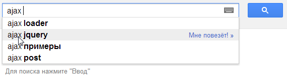

В этой главе мы «обзорно», на уровне возможностей и примеров рассмотрим технологию AJAX. Пока что с минимумом технических деталей.
Она будет полезна для понимания, что такое AJAX и с чем его едят.
Что такое AJAX?
AJAX (аббревиатура от «Asynchronous Javascript And Xml») – технология обращения к серверу без перезагрузки страницы.
За счет этого уменьшается время отклика и веб-приложение по интерактивности больше напоминает десктоп.
Несмотря на то, что в названии технологии присутствует буква X (от слова XML), использовать XML вовсе не обязательно. Под AJAX подразумевают любое общение с сервером без перезагрузки страницы, организованное при помощи JavaScript.
Что я могу сделать с помощью AJAX?
- Элементы интерфейса
-
В первую очередь AJAX полезен для форм и кнопок, связанных с элементарными действиями: добавить в корзину, подписаться, и т.п.
Сейчас – в порядке вещей, что такие действия на сайтах осуществляются без перезагрузки страницы.
- Динамическая подгрузка данных
-
Например, дерево, которое при раскрытии узла запрашивает данные у сервера.
- Живой поиск
-
Живой поиск – классический пример использования AJAX, взятый на вооружение современными поисковыми системами.
Пользователь начинает печатать поисковую фразу, а JavaScript предлагает возможные варианты, получая список самых вероятных дополнений с сервера.
Код, который это обеспечивает, работает следующим образом.
- Код активируется примерно при каждом нажатии клавиши, но не чаще чем раз в 100 мс (примерно).